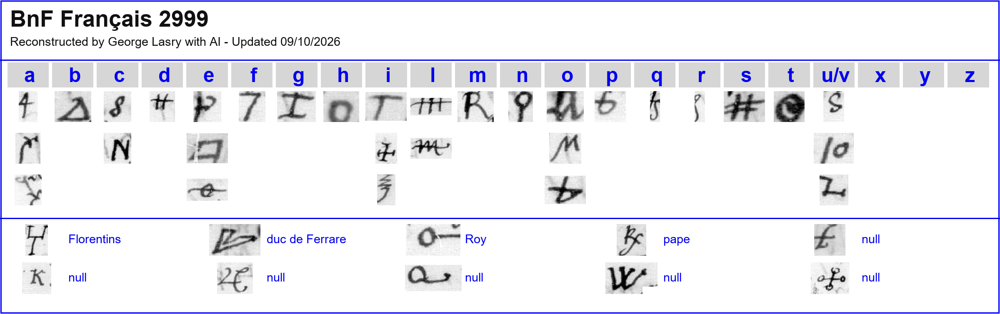
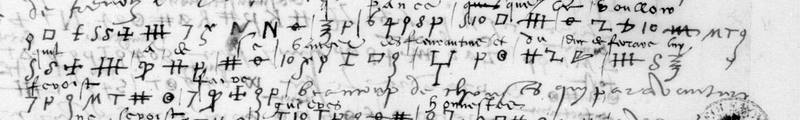

George Lasry’s decipherment
George Lasry’s report on this item, as he sent it on 24 October 2026 (PDF), in its own order and wording. The decipherment, the translation and the reconstruction of the key are his, made with ChatGPT Astra 6 and Anthropic Opus 5.5. This project’s own checks follow under Verification.
Français 2999 — Turenne, ff13r–13v
Contents: Turenne reports on papal negotiations, revenge against the Florentines and the duke of Ferrara, and royal assistance. His postscript discusses André Doria’s intended change of allegiance.
2/2 pages transcribed; 1/2 pages deciphered; 1 more in part
- Ciphertext-only:
- No
- Sender:
- Vicomte de Turenne
- Recipient:
- The Grand Master
- Year:
- 1 June 1528
- Key:
- 46 symbols: 31 letter signs, 4 in nomenclature, 6 nulls, 5 unidentified; 2 further sign readings uncertain.
- Ciphertext:
- 785 elements, 775 identified (98.7%)
- Interlinear plaintext:
- Interlinear plaintext on the same selected pages, f13r–v. ·

Excerpt and Translation
f13r, three complete consecutive rows2–4

Excerpt
ne qu’il face, ie pance que le vouloir qu’il a de se vanger des Florentins et du duc de Ferrare lui feroist faire beaucoup de choses qui par advanture
Translation
nor whatever he does, I think that his wish to take revenge on the Florentines and the Duke of Ferrara would make him do many things that perhaps …
Readable text
The full text, folio by folio, as in the report. Bold marks the passages deciphered from the cipher; the rest is the clear text of the letter. Question marks are the report’s: [?] or a bare ? for a sign or group left unread, a ? after a word for a doubtful reading.
Français 2999 — Turenne au Grand Maître, 1 juin 1528
f13r
Monseigneur, pour ce que les affaires pour quoy vous m’avez envoyé sont presques ?, je vous ay escript deux fois qu’il vous pleust supplier au Roy me permettre aller vers monseigneur de Lautrec ou aultre lieu où je pourrois, je pense bien, pouvoir plus faire de service que de demeurer icy, ? qu’il plaise à Sa Saincteté ? quelque chose. S’il faut les affaires brouiller ? et les choses que le pape me declarera, certainement ? je taschay d’en vouloir le bien du Roy et de faire advertissement ? les personnages qui desirent que ses affaires aillent bien. Je vous ay fait ? les ? monseigneur de Lautrec, desquelles je vous ? à monseigneur le mareschal ?.
Mais quoy qu’il die, ne qu’il face, ie pance que le vouloir qu’il a de se vanger des Florentins et du duc de Ferrare lui feroist faire beaucoup de choses qui par advanture
ne seroist guieres honnestes à bons ?, aussi bien ? qu’il ne trectera avecques le Roy, qu’il ne s’assure de luy, qu’il luy aidera par toutes voies à ce vanger.
Remonstre les dits Florentins en ces mains, comme ils estoient en son ? au dit duc de Ferrare, Modene, Rege et Ribiere, en les ? du conte de Carpi.
Qui ? à luy bien ?, comme j’ay dict. Je ne ceste compaignie, qui ne ? luy son propre moyen ? que le Roy.
Doist bien regarder doresenauant de ? homme autour d’ung pape ne autre prince, qui ne affection particuliere.
À aultre qu’à luy. Je ne veux pas dire que tous ? qui le ? servent le faict du Roy, que celuy de qui je fois mancion, qui est ? France, voulsist faire meschancetes.
f13v
Tout le ? remarque, mais apres qui touche tous autres, il est un Ferrarois seruiteur du pape, domesticque, despeschant de affaires plus secres, qui ? de luy ? s’il veult, aiant les affaires en maniemant seul, comme il a eu par le passé.
Je vous ay bien voulu escripre ?, car ? fait mestier de ? Monseigneur, ? quelque ? vous ?. Monseigneur, vous pouvez estre seur que ? le Roy parlera autre langaige. ?
Desmonstracion de bonne voulente, qu’il fait changera bien tost, et prendra le parti, car il
entretient tout ce que vous ? avez advis l’omme du monde ou il ? de seurete et ? est ?. S’il plaist au Roy, ? ? demander à vous ? s’il vous plaist, quelque ? semblable ?. Je suis seur qu’il sera sceu et ne ?. Monseigneur, humblement me recommande à vostre bonne grace, priant le maistre de vous donner, Monseigneur, bonne vie et ?. De Orviette, ce premier jour de Juing mil v c xxviii.
Monseigneur, j’ay nouvellement entendu ? que j’espere que dans ? de temps ? nouvelles que le pape avoit ?. Vostre tres humble ?, ?
Turenne
Que messire André Doria avoist deslibere laisser le Roy et prendra party a l’empereur. ? et à Dieu, Monseigneur, ? qu’il ne le ? le dist seigneur.
01 Verification
Spot-check against the manuscript
This result is George Lasry’s. This project did not re-solve the cipher: it checked one sample against the Gallica image and recorded what it found.
- Batch B. Image checked: https://openapi.bnf.fr/iiif/image/v3/ark:/12148/btv1b90599722/f13/full/1600,/0/default.jpg
- Folio matches the report: yes; cipher present: yes
- What we checked: f13r cipher rows 2-4: contemporary interlinear "...pance que le vouloir quil a de se vanger des Florentins et du duc de Ferrare luy feroist beaucoup de choses qui par advanture" = his excerpt; sign-level decode not done
- Verdict: confirmed (method key recovered based on adjacent plaintext, extent partial). The check is a sample, not a re-solution.
- Notes: f13v only in part (1/2 pages fully deciphered) though 98.7% of elements identified. Docket "1528 Italie". Turenne (Francois de La Tour) in Rome 1528 fits.

02 Other contributions
- Interlinear plaintext
- Interlinear plaintext on the same selected pages, f13r–v.
Full texts
The transcription and the decryption of every document on this page, so that the reading can be used and checked. Short files are shown here; all are in the repository.
George Lasry's decipherment (report PDF, 24 Oct 2026) read in part
The Vicomte de Turenne to the Grand Master, 1 June 1528. Turenne reports on papal negotiations, revenge against the Florentines and the duke of Ferrara, and royal assistance; his postscript discusses Andrea Doria’s intended change of allegiance.
Builds coherent sentences, but under the read bar of 95% of words read as sense (100% here); the holes are marked in the reading.
Decryption: in full above, in George Lasry’s decipherment (readable.md)
Reading: in full above, in George Lasry’s decipherment (readable.md)
Translation: in full above, in George Lasry’s decipherment (translation_excerpt.md)
03 Sources
- George Lasry, with ChatGPT Astra 6 and Anthropic Opus 5.5, BnF cipher research, 10 October 2026 (sent to Daniel Bourdeau on 13 October 2026 for publication here), p. 131; his other items are listed on his contributor card.
- image checked in the spot-check
- The working folder:
targets/turenne1528/(his entry as extracted from the report, our spot-check,profile.json).